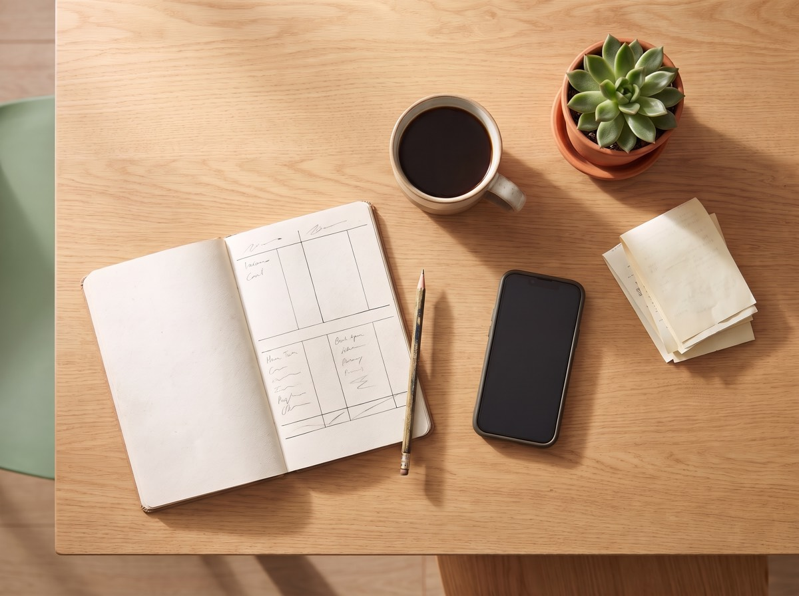
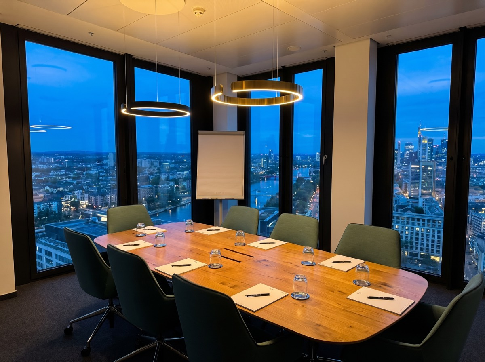

Jemand liefert dir den Durchschnitt.
Ein Berater sagte mir einmal unter vier Augen: „Ich empfehle nicht, was für dich am besten ist. Ich empfehle, was ich empfehlen darf.“ Er ist nicht der Saboteur. Er ist Gefangener seines Systems.
Er nimmt dir kein Geld weg. Er verhindert, dass es wächst: durch Aufschieben, Delegieren und Interessenkonflikte, ohne dass je ein Alarm losgeht. Finanzielle Bildung schützt dich. Und sie ist erlernbar.
Bildung, keine Anlageberatung · WINX-Tower, 21. Etage · im Raum und live online
Dein Wille zur Vorsorge ist richtig. Dein Wunsch nach Selbstbestimmung ist mutig. Dir fehlen nur die richtige Reihenfolge und der rote Faden.
Ein Berater sagte mir einmal unter vier Augen: „Ich empfehle nicht, was für dich am besten ist. Ich empfehle, was ich empfehlen darf.“ Er ist nicht der Saboteur. Er ist Gefangener seines Systems.
Das Internet ist voller Meinungen, nur wenige tragen. Einzelne Videos und KI-Strategien halten, solange die Kurse steigen. Die erste Abwärtsphase trifft dich nachts im Tiefschlaf.
… ist die teuerste deines finanziellen Lebens. Niemand schlägt Alarm. Wer wartet, entscheidet auch, nur gegen sich selbst.
Anlageberatung zementiert Abhängigkeit. Finanzbildung schafft Mündigkeit. Wir geben keine Anlage-Empfehlungen, wir vermitteln methodische Vorgehensweisen am Kapitalmarkt: in der richtigen Reihenfolge, von Mensch zu Mensch, ohne Provisionen.
Kurze Lerneinheiten in der richtigen Reihenfolge statt Frontalvortrag. Selbst-Checks mit sofortigem Feedback.
Vier Geldtöpfe geben jedem Euro eine Adresse: Liquidität, Notgroschen, Investition, Risiko.
Keine Vorhersage des Marktes, sondern geübte Reaktionen auf das, was tatsächlich passiert.
„Wir versprechen dir das Können und das Fundament, deinen eigenen Weg zu gehen.“R&F
Vom ersten Überblick über dein Geld bis zum eigenen Regelwerk an der Börse. Dazu eine eigene Welt für Familien.

Dein erster Tag, Investmenttag und Börsentag, Workshops auch einzeln. Ohne Vorwissen, ab 18 – ob mit 20 oder mit 60.
ab 79 € online · ab 129 € im RaumMehr erfahren →
Modul 1A einzeln, Investment Zirkel, Rainmaker Zirkel und Mentoring. Höchstens 12 Plätze im Raum.
ab 199 € online · ab 299 € im RaumMehr erfahren →Eine Stunde Spielen im 21. Stock für Familien mit Kindern von 6 bis 9 Jahren.
kostenlos · 19 € Pfand, am Tag zurückMehr erfahren →Online und kostenlos: Sieh dir an, wie wir unterrichten, bevor du dich für einen Tag im Raum entscheidest. Der nächste Termin wird hier angekündigt.
„René ging weit über den Lehrplan hinaus.“